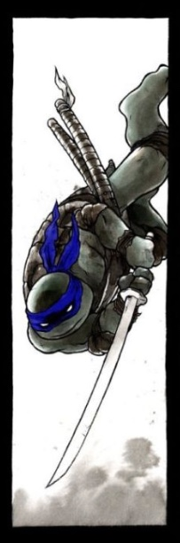
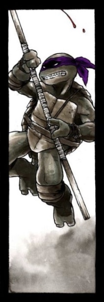
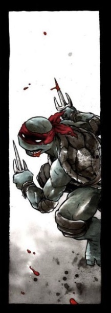
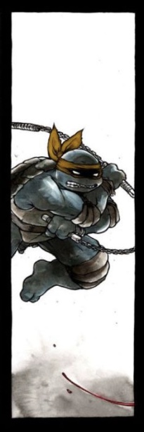

LEONARDO
- 
- The de facto leader of the Turtles, Leonardo is courageous, decisive, and a disciplined student of martial arts. As a strict adherent to Bushidō, he has a very strong sense of honor and justice. He wears a blue mask (red in the mirage/image comics) and wields a pair of Katana. He is the oldest of the four. He is named after Leonardo da Vinci.
DONATELLO
- 
- The inventor, and technology geek, Donatello has a reputation as something of a smart aleck. He is perhaps the least violent Turtle, preferring to use his intellect to solve conflicts. He wears a purple mask (red in the mirage/image comics) and wields the Bō staff. He is named after Donato di Niccolò di Betto Bardi.
RAPHAEL
- 
- The team's "bad boy", Raphael has an aggressive nature and seldom hesitates to throw the first punch. He is also an intense fighter. His personality can be alternately fierce, sarcastic, and full of angst, and oftentimes delivers deadpan humor. Still, he is good-hearted, willing to protect others and is intensely loyal to his brothers and sensei. Raphael is good friends with Casey Jones. He wears a red mask and wields a pair of Sai. He is named after Raphael Sanzio.
MIKEY
- 
- The easy-going and free-spirited Michelangelo provides much of the comic relief. While he loves to read comics and eat pizza, this Turtle also has an adventurous side. He wears an orange mask (red in the Mirage/Image comics) and wields a pair of Nunchaku. He is named after Michelangelo Buonarroti.